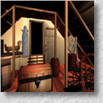
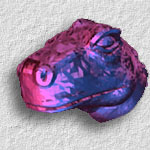

Demo and Software
Spherical Maps
|
panotransform version 1.0, (released on 1 March 2010) |


|
spheremap version 1.0, (released on 15 March 2007) |


Genetic Algorithms and Evolutionary Computing
|
epgpu version 0.99 |


Image Tools
|
DWT-GPU version 1.0, (released on 18 July 2006) |
|
arti version 1.30, (Updated May 2006) |
Image-based Modeling and Rendering
|
panoshader demo version 2.0, Cg Implementation | ||||


|  |
panoview demo version 1.0, |
|  |
irrad demo version 1.0, |
Non-Photorealistic Rendering

|
toon demo version 1.0, |
Volume Visualization

|
asc version 2.01a (released under BSD-style license, June 2009) |
Digital Halftoning

|
sfc version 1.0., |
Sampling

|
udpoint ver 1.0. |